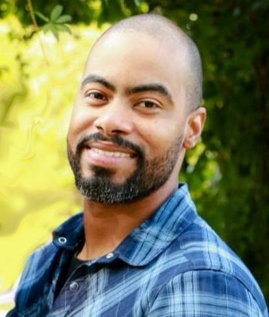
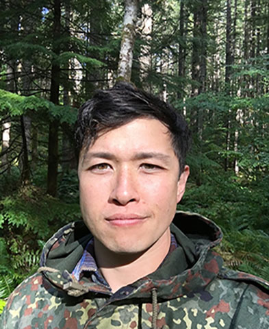
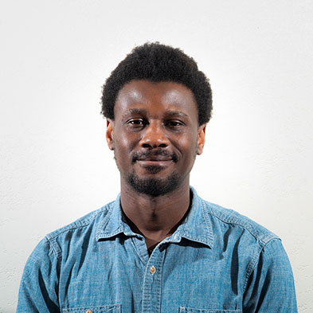

About Us
Irwin Ayala
I’m an Air Force veteran with over 10 years of law enforcement experience. I used to run a small business in the oil and gas industry, but we were forced to end operations due to COVID-19. The pandemic came precisely during a time when I was considering moving away from the oil field and starting a lifestyle in which I would feel accomplished. I have always been passionate about computers and how they worked. I’ve considered different avenues to learn coding throughout the years, but I just wasn’t sure I wanted to get another 4-year degree. Research brought me to Code-Fellows, and I was instantly attracted at the prospect of being able to learn to code in a relatively fast manner. With my education at Code-Fellows, I hope to become a full-stack software developer.
Dan Engel
I’ve worked in the commercial photography world for the last 20ish years most recently I worked at REI for 8 years. In April I was laid off along with a few hundred of my colleagues. I came to Code Fellows as a result of some soul searching about what I want from a career and job. I’ve explored a few options from woodworking to project management and after chatting with a friend about coding, I had a better sense that this might be the career path I’ve been looking for! I hope to gain the skills and knowledge to land a job as a full stack developer.
Barrett Nance
My last 5 years have been spent working in distilleries including managing production at a high end single malt whiskey distillery. As the quarantine progressed and business shrank I saw how small that industry was and therefore how restrictive my career prospects and locations were. After considering and dreading going back to work boats in Alaska a friend told me about code bootcamps and through a bit of research I found Code Fellows. I’ve stayed away from education since leaving school at 14 but I thought this was a great opportunity to have a valuable, flexible and reliable career as a full stack developer.
Andy Agulue
I came from the restaurant industry to software development. I was part of the opening of the restaurant we built the website for, hence this project has been a little dear to me. I enjoy hiking with my dog, cross county motorcycle trips and photography. In my free time you can find me in my darkroom developing prints.